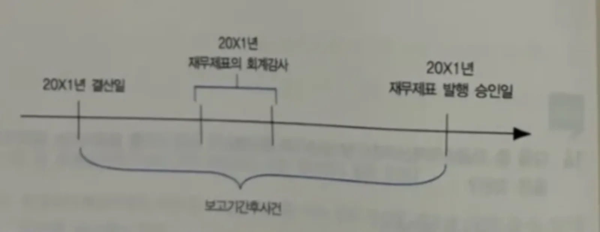

이 문서는 효빈광역시의 제19대 시장인 박효빈 시장(회계 A+ 보유자)이 직접 감수한 재경관리사 재무회계의 지뢰밭, '특수 주제 공시 및 보고(K-IFRS 1010, 1024, 1034)' 파트를 총망라한다.
내용을 하나라도 빼먹으면 국세청에 고발당한다. 기준서 원문의 모든 구체적인 예시, 2분기 중간재무보고 비교표, 지배기업 공시의 예외 조항과 감독이사회 규정 등 단 하나의 디테일도 누락 없이 100% 완전하게 복원하였다. 또한 수험생들의 오답을 유도하는 함정을 부수기 위해 각 문단마다 1타 강사진의 무자비한 캐릭터 참교육 팩트폭력 예시를 욱여넣어 실전 방어력을 극한으로 끌어올렸다.
보고기간후사건이란 보고기간 말(결산일)과 재무제표 발행승인일 사이에 발생한 유리하거나 불리한 사건으로 다음 두 가지 유형으로 구분한다.

| 구분 | 회계처리 | 기준서상 구체적 예시 (빈출 항목 100% 반영) |
|---|---|---|
| 1. 수정을 요하는 보고기간후사건 (보고기간 말 존재 증거) |
재무제표에 이미 인식한 금액은 수정하고, 미인식 항목은 새로 인식함. |
① 보고기간 말에 존재하였던 현재의무가 보고기간 후에 소송사건의 확정에 의해 확인되는 경우. ② 보고기간 말에 이미 자산손상이 발생되었음을 나타내는 정보 입수 또는 손상차손 수정 정보 입수. ㄱ. 보고기간 후의 매출처 파산은 보고기간 말에 고객의 신용이 손상되었음을 확인해준다. ㄴ. 보고기간 후의 재고자산 판매는 보고기간 말의 순실현가능가치에 대한 증거를 제공할 수 있다. ③ 보고기간 말 이전에 구입한 자산의 취득원가나 매각한 자산의 대가를 보고기간 후에 결정하는 경우. ④ 보고기간 말 이전 사건의 결과로서 보고기간 말에 종업원에게 지급하여야 할 법적 의무나 의제의무가 있는 이익분배나 상여금지급 금액을 보고기간 후에 확정하는 경우. ⑤ 재무제표가 부정확하다는 것을 보여주는 부정이나 오류를 발견한 경우. |
| 2. 수정을 요하지 않는 보고기간후사건 (보고기간 후 발생 상황) |
재무제표에 인식된 금액 수정 안 함. (단, 중요한 것은 범주별로 주석 공시) |
① 보고기간 말과 재무제표 발행승인일 사이에 투자자산의 공정가치 하락. (공정가치의 하락은 일반적으로 보고기간 말의 상황과 관련된 것이 아니라 보고기간 후에 발생한 상황이 반영된 것이므로 재무제표에 인식된 금액을 수정하지 아니한다.) ※ 수정을 요하지 않는 사건 중 중요한 것의 필수 공시 사항: 1. 사건의 성격 2. 사건의 재무적 영향에 대한 추정치 (또는 그러한 추정을 할 수 없는 경우 이에 대한 설명) |
| 항목 | 처리기준 및 설명 (기준서 원문 완벽 반영) |
|---|---|
| (1) 배당금 |
보고기간 후부터 재무제표 발행 승인일 전에 지분상품 보유자에 대해 배당을 선언한 경우, 그 배당금을 보고기간 말의 부채로 인식하지 않는다. ※ 이유: 보고기간 말에는 기업이 배당을 지급하겠다고 선언하지 않은 상태이므로 보고기간 말에 현재 의무가 존재하지 않기 때문이다. 따라서 미지급배당금 등은 배당을 선언한 날(즉, 다음연도)에 회계처리한다. |
| (2) 계속기업 (Going Concern) |
경영진이 보고기간 후에, 기업을 청산하거나 경영활동을 중단할 의도를 가지고 있거나, 청산 또는 경영활동의 중단 외에 다른 현실적 대안이 없다고 판단하는 경우, 계속기업의 기준에 따라 재무제표를 작성해서는 아니된다. 이 경우 그 효과가 광범위하게 미치므로, 단순히 원래의 회계처리방법 내에서 이미 인식한 금액을 조정하는 정도가 아니라 회계처리방법을 근본적으로 변경(예: 청산기준)해야 한다. ※ K-IFRS 1001호 '재무제표 표시'의 계속기업 관련 필수 공시 사항: 1. 재무제표가 계속기업의 기준 하에 작성되지 않은 경우 그 사실. 2. 계속기업으로서의 존속 능력에 대해 유의적인 의문이 제기될 수 있는 사건이나 상황과 관련된 중요한 불확실성을 경영진이 알게 된 경우. |
특수관계는 상거래에서 흔히 나타나며, 기업은 지배력, 공동지배력 또는 유의적인 영향력을 통하여 피투자자의 재무정책과 영업정책에 영향을 미칠 수 있고, 그에 따라 피투자자의 당기순손익과 재무상태에 영향을 미칠 수 있다.
| 구분 | 조건 (보고기업과 특수관계에 있는 경우) |
|---|---|
| 개인 (가까운 가족 포함) |
다음 중 어느 하나에 해당한다면 그 개인이나 그 개인의 가까운 가족은 보고기업과 특수관계에 있는 것으로 본다. 1. 보고기업에 지배력 또는 공동지배력이 있는 경우 2. 보고기업에 유의적인 영향력이 있는 경우 3. 보고기업 또는 그 지배기업의 주요 경영진의 일원인 경우 ※ 가까운 가족: 당해 기업과의 거래 관계에서 개인의 영향을 받거나 영향력을 행사할 것으로 예상되는 가족으로 '자녀 및 배우자', '배우자의 자녀' 및 '당해 개인이나 배우자의 피부양자' 등을 포함한다. |
| 기업 |
다음 중 어느 하나에 해당한다면 보고기업과 특수관계에 있는 것으로 본다. ① 기업과 보고기업이 동일한 연결실체 내의 일원인 경우 (지배기업과 종속기업 및 연결실체 내의 다른 종속기업은 서로 특수관계에 있음을 의미) ② 한 기업이 다른 기업의 관계기업이거나 공동기업인 경우 (또는 그 다른 기업이 속한 연결실체 내 일원의 관계기업/공동기업인 경우) ③ 두 기업이 동일한 제3자의 공동기업인 경우 ④ 제3의 기업에 대해 한 기업이 공동기업이고 다른 기업이 관계기업인 경우 ⑤ 기업이 보고기업이나 그 보고기업과 특수관계에 있는 기업의 종업원급여를 위한 퇴직급여제도인 경우. (보고기업 자신이 퇴직급여제도인 경우, 그 제도의 책임 사용자도 보고기업과 특수관계에 있음) ⑥ 기업이 특수관계인 '개인'에 의해 지배 또는 공동지배되는 경우 ⑦ 보고기업에 지배력/공동지배력이 있는 개인이 기업에 유의적인 영향력이 있거나 그 기업(또는 그 기업의 지배기업)의 주요 경영진의 일원인 경우 |
| 공시 항목 | 세부 내용 (기준서 원문 그대로 암기) |
|---|---|
| 1) 지배·종속기업간 특수관계의 주석공시 |
지배기업과 그 종속기업 사이의 관계는 ★거래의 유무에 관계없이 공시하며, 기업은 지배기업의 명칭을 공시한다. - 다만, 최상위 지배자와 지배기업이 다른 경우에는 최상위 지배자의 명칭도 공시한다. - 지배기업과 최상위 지배자가 일반이용자가 이용할 수 있는 연결재무제표를 작성하지 않는 경우에는 가장 가까운 상위의 지배기업의 명칭도 공시한다. ※ 가장 가까운 상위의 지배기업이란? 지배기업보다는 상위에 있고 일반이용자가 이용할 수 있는 연결재무제표를 작성하는 지배기업 가운데 '연결실체에서 가장 하위에 있는' 지배기업을 말한다. |
| 2) 주요 경영진의 주석공시 |
주요 경영진에 대한 보상의 총액과 다음 5가지 분류별 금액을 공시한다: 1. 단기종업원급여 / 2. 퇴직급여 / 3. 기타 장기종업원급여 / 4. 해고급여 / 5. 주식기준보상 |
| 3) 특수관계자거래가 있는 경우의 주석공시 |
회계기간 내에 특수관계자거래가 있는 경우, 기업은 이용자가 재무제표에 미치는 특수관계의 잠재적 영향을 파악하는 데 필요한 거래, 약정을 포함한 채권·채무 잔액에 대한 정보뿐만 아니라 특수관계의 성격도 공시한다. 공시는 최소한 다음 내용을 포함한다: 1. 거래 금액 2. 약정을 포함한 채권·채무 잔액과 그 채권·채무의 조건(담보 제공 여부 포함) 및 결제할 때 제공될 대가의 성격 3. 그 채권·채무에 대하여 제공하거나 제공받은 보증의 상세 내역 4. 채권 잔액에 대하여 설정된 대손충당금 5. 특수관계자 채권에 대하여 당해 기간 중 인식된 대손상각비 |
| 4) 특수관계자별 주석공시 |
위 3)에서 규정하는 사항은 다음과 같은 7가지 범주로 분류하여 공시한다: 1. 지배기업 2. 당해 기업을 공동지배하거나 당해 기업에 유의적인 영향력을 행사하는 기업 3. 종속기업 4. 관계기업 5. 당해 기업이 참여자인 공동기업 6. 당해 기업이나 당해 기업의 지배기업의 주요 경영진 7. 그 밖의 특수관계자 |
| 5) 기타 (독립 당사자 및 통합 공시) |
- 독립된 당사자 사이의 거래 조건(Arm's length)에 따라 거래가 이루어졌음을 입증할 수 있는 경우에 한하여 특수관계자거래가 그러한 조건으로 이루어졌다는 사실을 공시한다. - 기업의 재무제표에 미치는 특수관계자거래의 영향을 파악하기 위하여 분리하여 공시할 필요가 있는 경우를 제외하고는 성격이 유사한 항목은 통합하여 공시할 수 있다. |
중간재무보고서는 한 회계연도보다 짧은 회계기간(분기 또는 반기)을 대상으로 하는 재무제표를 말한다. 중간재무보고를 하는 가장 중요한 이유는 회계정보의 적시성을 확보하여 줌으로써 회계정보의 유용성을 높일 수 있기 때문이다.
반면에 중간재무보고를 할 때는 주관이 많이 개입되므로 회계정보의 신뢰성이 떨어질 수 있는 문제점이 있을 수 있다. 그러나 이러한 문제점이 있음에도 회계정보의 적시성을 높여주기 위하여 우리나라에서는 상장회사의 경우에는 중간재무보고서를 작성·공시하도록 규정하고 있다.
중간재무보고서는 최소한 다음의 구성요소를 포함하여야 한다.
다음과 같은 정보가 중요하고 중간재무보고서의 다른 곳에 공시되지 않았다면, 최소한 이러한 정보는 중간재무제표에 대한 주석에 포함하여야 한다. 이러한 정보는 일반적으로 당해 회계연도 누적기준으로 보고한다. 그러나 당해 중간기간을 이해하는 데 중요한 사건이나 거래도 공시한다.
객관식 말장난이 가장 심하게 들어오는 구간이다. 재무상태표(시점 정보)와 나머지 3표(기간 정보)의 비교 대상이 다르다는 것을 반드시 암기해야 한다.
▶ 예를 들어, 연차보고기간 말 12월 31일인 회사의 20X2년도 2분기 중간재무제표(회계기간이 4월 1일부터 6월 30일까지)를 20X1년도 재무제표와 비교하는 형식으로 작성한다면 각 중간재무제표의 보고기간 말 또는 보고기간은 다음과 같다.
| 재무제표 종류 | 당기 (20X2년도) | 전기 비교 (20X1년도) |
|---|---|---|
| 재무상태표 | 20X2. 6. 30. | 20X1. 12. 31. |
| 포괄손익계산서 | 20X2. 4. 1. ~ 6. 30. | 20X1. 4. 1. ~ 6. 30. |
| 20X2. 1. 1. ~ 6. 30. | 20X1. 1. 1. ~ 6. 30. | |
| 자본변동표, 현금흐름표 |
20X2. 1. 1. ~ 6. 30. | 20X1. 1. 1. ~ 6. 30. |
[계절성이 높은 사업의 권장사항]
계절성이 높은 사업을 영위하는 기업의 경우, 중간보고기간 말까지 12개월 기간의 재무정보와 직전 회계연도의 동일기간에 대한 재무정보를 보고하는 것은 유용할 것이다. 따라서 계절성이 높은 사업을 영위하는 기업은 이러한 정보를 보고할 것을 권장한다.
특정 중간기간에 보고된 추정금액이 최종 중간기간에 대폭 변동하였지만 최종 중간기간에 대하여 별도의 재무보고를 하지 않는 경우, 추정의 변동 내용과 금액을 해당 회계연도의 연차재무제표에 주석으로 공시하여야 한다.
새로운 한국채택국제회계기준서의 경과규정에 의하지 않은 회계정책의 변경은 다음과 같이 재무제표에 반영하여야 한다.